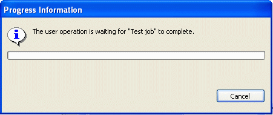
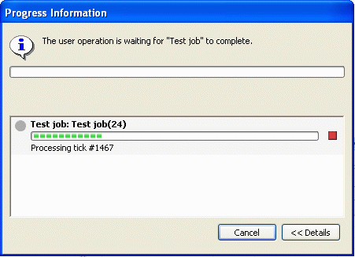

A goal of the responsive UI plan item was to give the user the feeling of being in control over things happening in the background. There is one scenario where we need your help to achieve this goal. When a modal user operation is blocked by a background job, we want to show the running jobs and provide the option to cancel some of them. The existing JFace ProgressMonitorDialog can only provide limited support to do so. All it can do is inform the user that the current operation needs to wait. See the following screenshot:

What we really want to show is the progress view with the option to cancel a job:

You can get this additional support by migrating from ProgressMonitorDialog to the new org.eclipse.ui.progress.IProgressService.
Here is how you can migrate:
ProgressMonitorDialog progress = new ProgressMonitorDialog(shell); progress.run(true, true, operation);Replacement:
PlatformUI.getWorkbench().getProgressService().busyCursorWhile(operation);busyCursorWhile shows the busy cursor and after some delay it shows an enhanced progress dialog as shown above.
ProgressMonitorDialog progress = new ProgressMonitorDialog(shell); progress.run(false, false, operation);In this case the first parameter, fork, in dialog.run() is false, which means the operation isn't run in a separate thread but in the UI thread with the consequence of preventing any UI refreshes.
Replacement:
PlatformUI.getWorkbench().getProgressService().run(false, false, operation);
Important: whenever possible try to run your operation with fork==true. When converting to IProgressService please check whether you can convert from fork==false to fork==true. Using fork==false simply because the operation needs to access some state from UI widgets is not an excuse to not set fork==true. You should change your code so that you can fetch the state from the widgets outside of the operation in the UI thread, or gather all the necessary information from the UI before starting the operation.
createTypeDialog(Shell parent, IRunnableContext context, ...)Existing code:
ProgressMonitorDialog progress= new ProgressMonitorDialog(shell); createTypeDialog(shell, progress, ...);Replacement:
createTypeDialog(shell, PlatformUI.getWorkbench().getProgressService());
In other words the IProgressService is a IRunnableContext.
“The Eclipse 3.0 progress service, one-stop shopping for all your modal progress needs!”